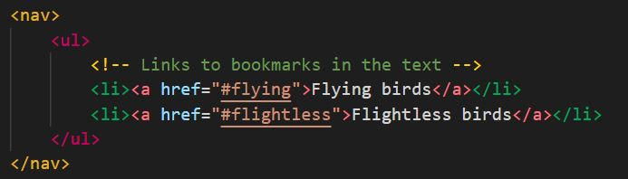
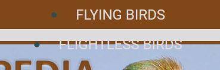
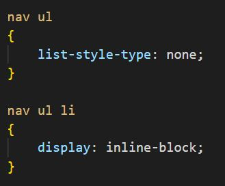
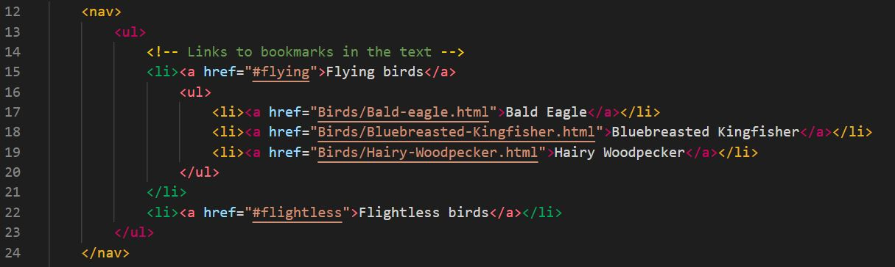
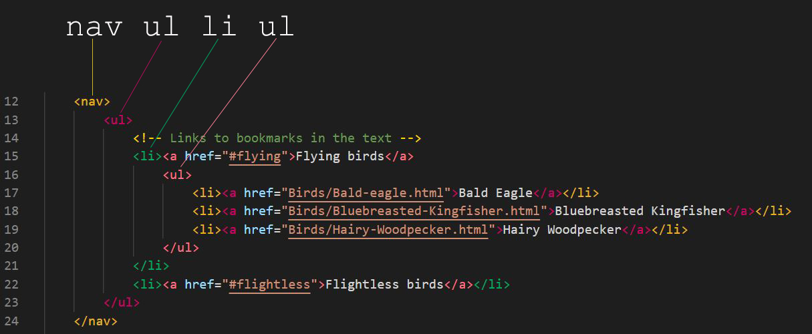
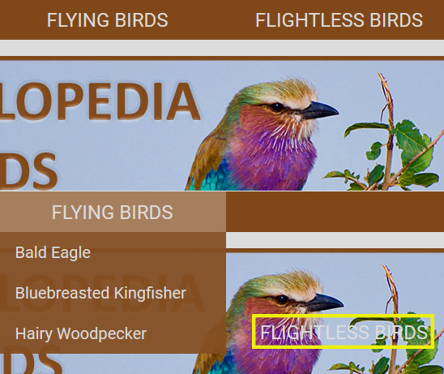
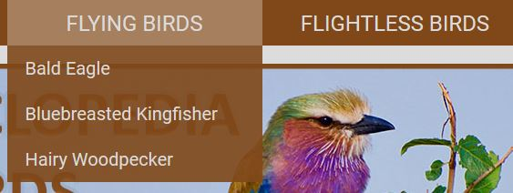

Indtil videre har vi lavet en simpel menu i et niveau. I dag skal vi kigge på en dropdown menu lavet i CSS.
For at kunne lave en CSS dropdown menu, skal vi have flyttet vores menulinjer over i en unordered list, som vi så styler til at opføre sig som en menu i stedet for at blive vist som en liste. Når vi gør det, er det fordi, det er meget lettere at arbejde med, når man skal skrive CSS-stylingen til menuen.
Det betyder, at hele menuen skal omsluttes af en ul (unordered list) og hvert enkelt menupunkt bliver til en li (list item):
Lige når du laver ændringen, vil din menu se skrækkelig ud, fordi vi endnu ikke har fortalt den, hvordan den skal se ud:
For at fjerne punkt-tegnene og få menupunkterne til at stå på linje igen, tilføjes følgende kode:

Fordi vi har lagt vores menu ind i en ul (unordered list) og herunder li (list item), kan vi henvise til al styling på vores menu vha nav ul og nav ul li. Vi kan på den måde blive meget specifikke på, hvad det er, vi gerne vil ramme med vores styling.
CSS dropdown menu
Til en dropdown-menu skal man bruge en unordered list i to niveauer. Så først skal vi lære at lave en liste med en underliste:
- Jeg er første punkt i den overordnede liste
- Jeg er andet punkt i den overordnede liste
- Jeg er tredje punkt i den overordnede liste
- Jeg er første punkt i underlisten
- Jeg er andet punkt i underlisten
- Jeg er trejde punkt i underlisten
- Jeg er fjerde punkt i den overordnede liste
Læg mærke til i koden, at jeg starter min underliste midt i et overliggende li-element. Så min start li står før teksten på det overliggende liste-element, men min slut-li-tag står helt nede efter, at min underliste er blevet lukket igen.
I fugleleksikonnet kommer det til at se ud på denne måde, når der bliver lavet en underliste med flyvende fugle:
Jeg har menupunktet "Flying Birds" (som er et list-item i min øverste unordered list) på linje 15. Inden jeg afslutter det list-item, begynder jeg en ny unordered list på linje 16 (som bliver min undermenu/dropdown menu) og fylder den ud med de menupunkter (list-items og links på linje 17 - 19), som den skal indeholde. Herefter afslutter jeg min undermenu/dropdown menu på linje 20 og så afslutter jeg det overliggende list-item på linje 21. På linje 22 går jeg videre med at skrive det næste menupunkt "Flightless Birds" (list item) i den overliggende menu.
Vi skal nu i gang med at style på vores undermenu i CSS'en
Det første vi skal gøre, er vi skal sørge for, at vores undermenu ikke bliver vist, når man kommer ind på siden. Det gør vi ved at bruge attributten display: none;
nav ul li ul
{
display: none;
}
Fra nu af skal vi til at holde tungen lige i munden for at få lavet vores styling på de rigtige elementer. I eksemplet ovenfor starter vi med at kigge ind i vores nav-tag, herunder har vi et ul-tag, under det et li-tag og under det et ul-tag. Hvis vi kigger på HTML-koden igen, så vil den første nav-selector henvise til nav-tagget i linje 12. Ul henviser til ul-tagget i linje 13. Li henviser til li-tagget i linje 15. Den anden ul-selector henviser til ul-tagget i linje 16.
Så det vi ved nu er, at:
nav- henviser til vores menulinje (navigation)nav ul- henviser til den overordnede menunav ul li- henviser til menupunkterne (list items) i den overordnede menunav ul li a- henviser til selve linket i menupunkterne i den overordnede menunav ul li ul- henviser til vores undermenu (dropdown menuen)nav ul li ul li- henviser til menupunkterne (list items) i vores undermenunav ul li ul li a- henviser til selve linket i menupunkterne i vores undermenu
Når vi skal have åbnet vores undermenu, så sker det, når vi hover henover et af menupunkterne i overmenuen. Vi henviser til et menupunkt i overmenuen med nav ul li. Så vi kan henvise til, når vi hover over et menupunt i overmenuen ved at skrive nav ul li:hover. Udfordringen her er, at det jo er vores undermenu, vi skal have vist (display: block), og vi henviser til vores undermenu ved at skrive nav ul li ul, så hvordan åbner vi undermenuen ved at hover henover et menupunkt i overmenuen? Det gør vi ved at kombinere de to ting, jeg lige har beskrevet ovenfor:
nav ul li:hover ul
{
display: block;
}
Nu har vi den helt grundlæggende kode til at lave en dropdown menu. Der er dog en enkelt ting, som vi skal have gjort for at det virker 100%. Lige nu bliver vores dropdown en del af de øvrige elementer i menuen, fordi vi ikke har fortalt den andet. Det betyder, at øvrige menupunkter i overmenuen flytter sig i forhold til dropdown menuen, som i kan se i billedet nedenfor:
Dette skal vi have ændret ved at give vores undermenu en absolut position. Det betyder, at de andre elementer ikke forholder sig til, hvor henne vores undermenu er. De bliver blot stående på deres sædvanlige plads - uanset om undermenuen er åben eller lukket.
nav ul li ul
{
position: absolute;
}
Nu har du faktisk en fungerende dropdown menu. Alt, der skal gøres herefter, er at style på den, så den kommer til at se godt og funktionelt ud (links'ene er lette at læse og klikke på for brugeren). I opgaverne til i dag kommer du til at style din dropdown menu helt færdig. Hvis du undervejs er i tvivl om, hvilket element, du skal gøre hvad på, så gå tilbage til oversigten lidt længere heroppe, hvor du kan se, hvilken kode, der hører sammen med hvilket element.
